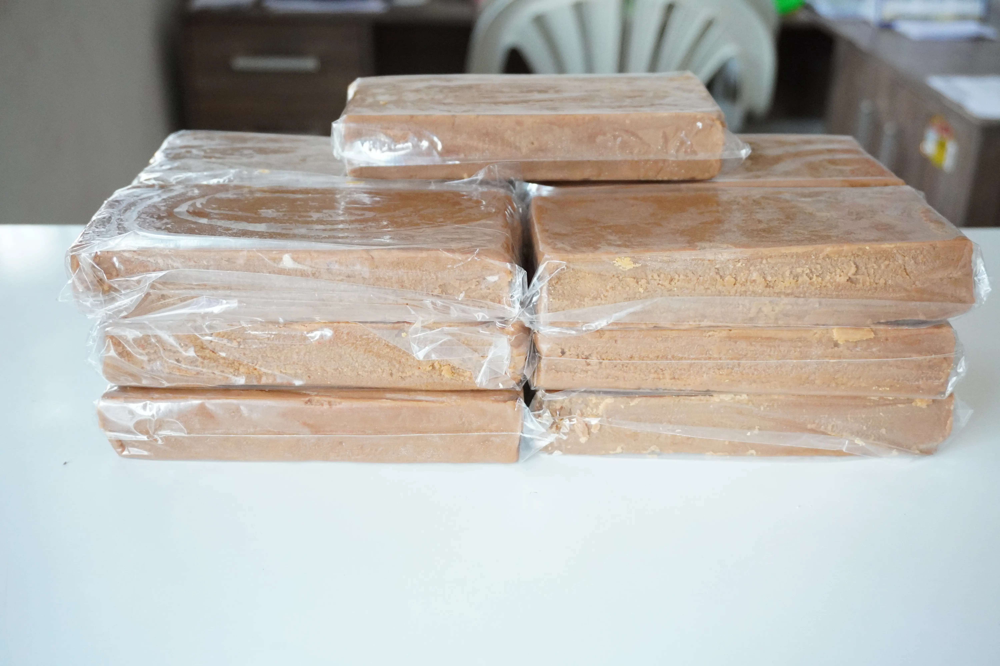
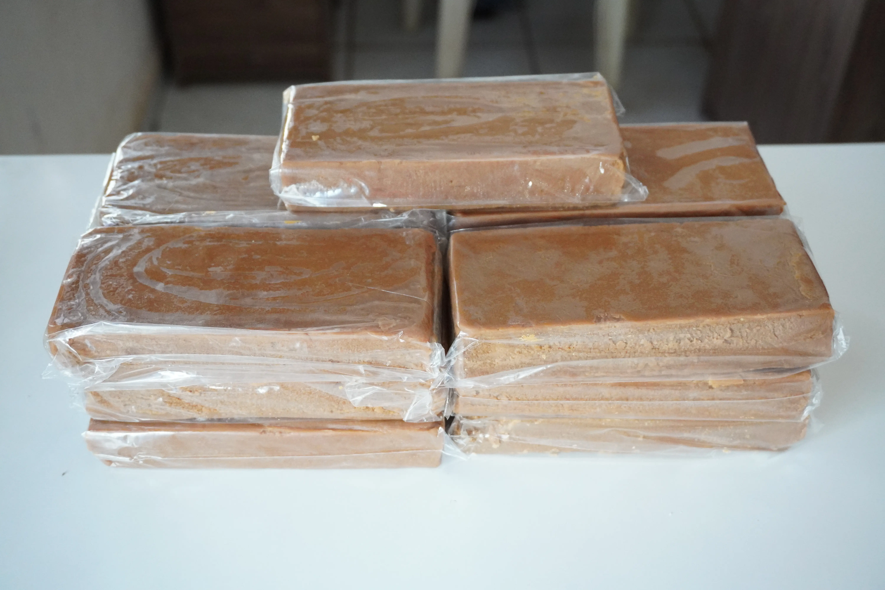
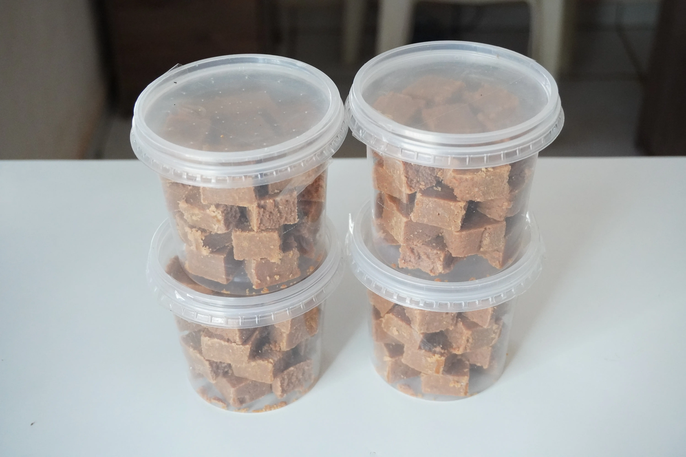
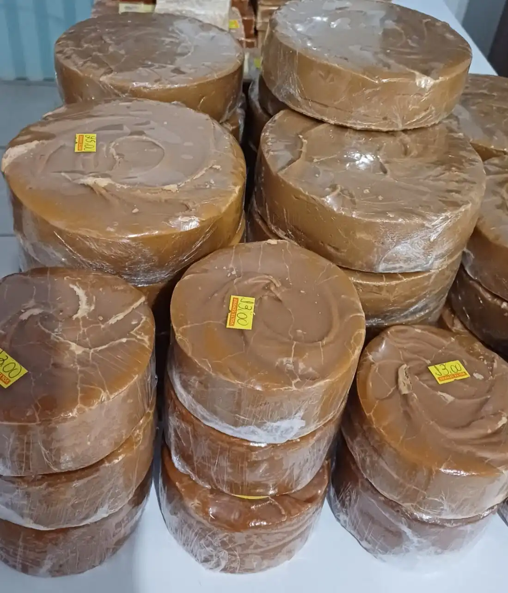

Rapadura Artesanal
Escolha o Sabor:
Retire na loja: R. Bom Jardim, 379 — Centro, Cáceres.
Rapadura Artesanal: O Doce Que Carrega a Tradição do Interior
A rapadura é um dos doces mais antigos e queridos da culinária brasileira, especialmente no interior do país. Produzida a partir do caldo de cana-de-açúcar cozido e moldado sem passar por processos de refinamento ou adição de conservantes, ela preserva todos os nutrientes naturais da cana: ferro, cálcio, potássio e vitaminas do complexo B. Na Peixaria Rio Paraguai, a rapadura é produzida de forma totalmente artesanal, em pequenos lotes que garantem o sabor e a qualidade de sempre.
O que diferencia a nossa rapadura das versões industrializadas é a ausência total de aditivos químicos. O processo é simples e honesto: o caldo de cana é extraído, cozido até o ponto exato e despejado em formas de madeira, onde esfria e adquire sua consistência característica. Nenhum conservante, nenhum corante, nenhum ingrediente que você não reconheça. Apenas cana e tradição — exatamente como era feito nos engenhos do interior há mais de um século.
Oferecemos dois sabores exclusivos: a Cana Tradicional, pura e com o sabor inconfundível da cana fresca; a Rapadura de Doce de Leite, que une a rusticidade da rapadura com a cremosidade do doce de leite caseiro; resultando em uma combinação tropical irresistível. Cada sabor é uma celebração da culinária regional mato-grossense.
A rapadura pode ser consumida pura, ralada no café ou no leite, usada para adoçar receitas como curau, pamonha, arroz-doce e bolos. É também um substituto natural ao açúcar refinado e uma excelente fonte de energia para o trabalho no campo. Leve a tradição do interior para a sua mesa — encomende a sua rapadura artesanal pelo WhatsApp e retire direto na loja em Cáceres.